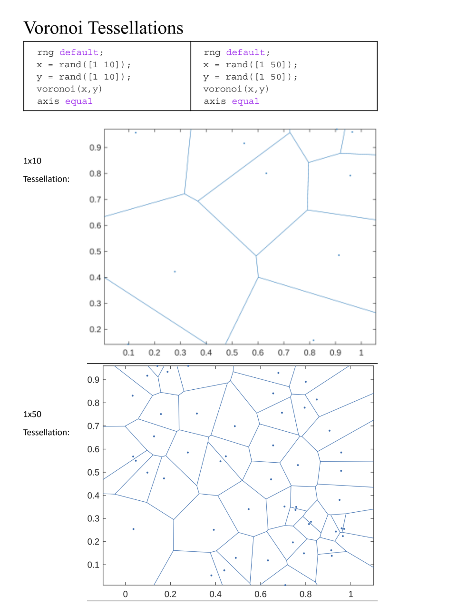

Pomelo Fruit-Inspired Noise Absorber
Mimicking the hierarchical structure of a pomelo fruit peel to create a passive acoustic material.
One of my main projects I worked on in high school was this idea that mimicking the hierarchical structure of a pomelo fruit peel can help absorb noise.
The Problem
I grew up in the noisy city of Taipei, but while everyone else accepted the constant roar of motorcycles, I couldn’t ignore it. However, conventional noise absorbers were bulky and expensive, so I was curious whether there was a lightweight and cheaper alternative.
The Solution
A pomelo fruit inspired my design for a tenth-grade science fair project. After reading a paper about the fruit’s ability to survive thirty-foot drops, I wondered if the same principle could apply to noise absorption. Using Onshape and MATLAB, I prototyped a structure modeled after the pomelo to mitigate sound propagation.
The next summer, I expanded my research beyond natural materials. I studied lattice structures and space-coiling mechanisms, both promising approaches for accessible noise pollution solutions. Inspired by patterns in nature, like the growth rules of plants, I proposed that curtain blinds can adopt materials with a coiled geometry structure to maximize low-frequency absorption. This could serve as a cost-effective alternative to triple-pane windows, which are often unaffordable in redlined neighborhoods, thus improving the living conditions for those residing near highways and railroads. Finding the relationship between things that aren’t related in any way, like fruits and noise pollution, opened my eyes to a new world of mechanical engineering. I learned that engineering could be rigid and fluid, structured yet flexible. I’m fascinated by unusual connections like these because I want to design technologies that bridge nature and machinery to improve people’s lives.

Add Prototype Image